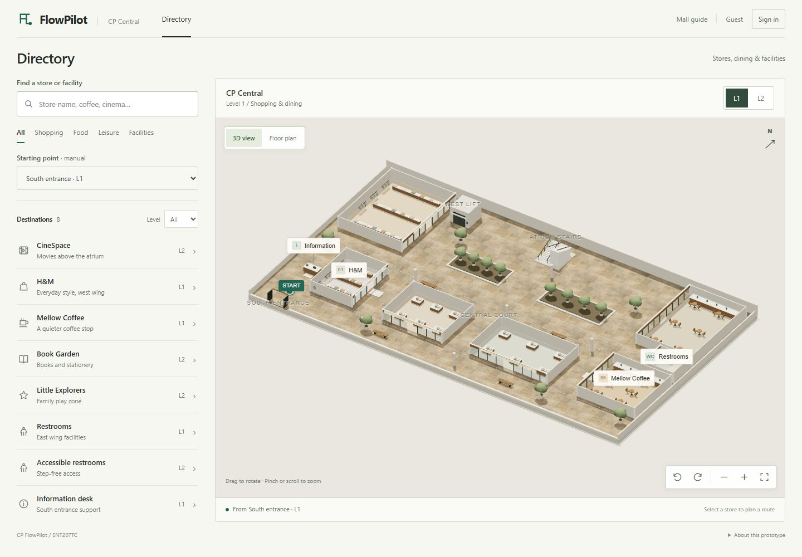

ENT207TC 小组测试 · 2026年11月1日
产品与测试说明
这轮测试主要看三件事：能否找到目的地、看懂地图、顺利走完路线。预计 10 分钟，手机和电脑都可以。先自己尝试，遇到卡点再记录。
产品里有什么
FlowPilot 是一个商场导览原型，包含两层三维商场和 8 个可导航目的地。本次线上版打开即进入目录，使用访客模式，免注册。

- 找店和设施：按名称搜索，按购物、餐饮、休闲、设施或楼层筛选；也可直接点地图上的店名。
- 查看空间：3D view 可旋转、缩放；Floor plan 是正向俯视图；L1 和 L2 切换楼层。
- 规划路线：选择起点和终点，查看距离、预计步行时间和步骤；交换起终点，或选择 Step-free route 使用电梯。
- 比较方案：Busy atrium 是模拟的拥挤状态，会重新计算路径。
- 逐步导航：Next waypoint 和 Previous 手动推进位置，跨层时自动切换楼层；到达后可找附近设施或反向返程。
目的地包括 CineSpace、H&M、Mellow Coffee、Book Garden、Little Explorers、两层卫生间和服务台。
请完成这 6 项任务
建议另开一个标签页操作产品，回到本页记录结果。每项选择“独立完成”“需要提示”或“未完成”，卡住也有价值。
- 找到咖啡店从 South entrance 出发，找到 Mellow Coffee 并打开路线。
- 看懂两层地图切换楼层、试一下俯视图和缩放；然后恢复完整地图。
- 规划跨层行程从 South entrance 前往 CineSpace，找到起终点、时间、距离及换层位置。
- 找到无台阶方案选择 Step-free route，观察路线与换层方式是否变化；再比较 Busy atrium 模拟状态。
- 走完一条路线关闭 Busy atrium，保留无台阶方案，开始导航。前进一步、后退一步，再继续到达影院。
- 继续找设施到达后找到附近卫生间并规划路线，试一下返回目录或反向返程。
操作提示：电脑左键拖动旋转，右键拖动平移；手机单指旋转，双指平移或缩放。俯视图拖动平移。右下角四角图标恢复视图，北向箭头随镜头更新。
测试后留下反馈
内容只保存在你当前浏览器。本页没有自动收集服务；填完后请复制或下载，再发给组长。匿名编号即可，无需填写邮箱或手机号。
这轮测试的范围
商场为代表性三维重建，距离为示例图数据。位置通过按钮推进，客流由开关模拟。这轮不做真实商场实地导航、实时定位、实时人流或线上账号注册测试。首次打开需要网络，加载过的地图资源可供离线访客使用。
如果微信群内打开出现白屏或拖动异常，请尝试在系统浏览器打开，并记录原浏览器的问题。实际测试记录由同学本人反馈，不预填成功率或评分。
给组织测试的同学
这份链接可先用于组内检查；正式用户测试建议邀请组外目标使用者，并遵循课程人数要求。先让对方独立操作，再给提示。记录完成情况、耗时、错误和原话；组内自测与正式参与者记录分开保存。
核对参考：入口至影院标准路线 212 m / 7 步，约 3 分钟；无台阶路线 282 m / 9 步，约 5 分钟；影院至二层无障碍卫生间 46 m。以上是原型模型的参考值。